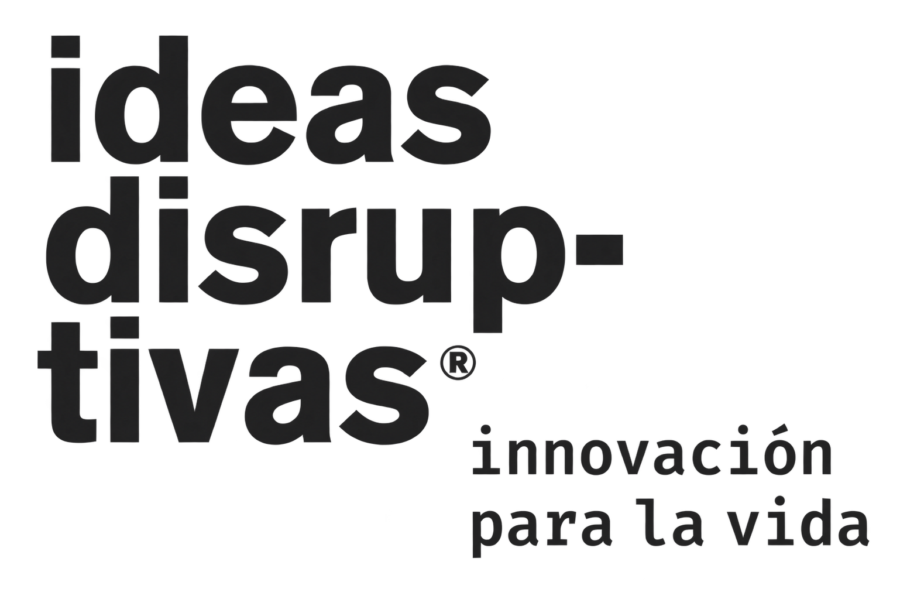
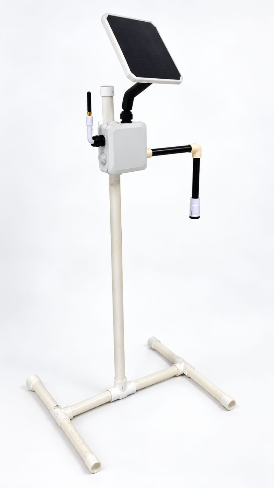

Un reto cercano.
Investigar cómo afectan las inundaciones a la comunidad y formular una pregunta que valga la pena explorar.

DesafIA by Ideas DisruptivasINNOVACIÓN QUE SE APRENDE HACIENDO
El próximo proyecto de innovación de tu escuela puede empezar aquí.
Una estación hidrométrica que lleva un reto real al aula: explorar el agua, conectar disciplinas y convertir ideas en propuestas para la comunidad.

01 / POR QUÉ LLEVARLO A TU ESCUELA
Adquirir DesafIA es dar a tus estudiantes un punto de partida tangible para desarrollar proyectos de innovación con un propósito: comprender un problema de su entorno y diseñar propuestas para abordarlo.
La estación permite poner sobre la mesa temas de agua, electrónica, energía solar y fabricación digital. Puede ser el centro de un proyecto interdisciplinario, una exposición escolar o una propuesta para una feria de ciencia.
Propuesta educativa: preguntar, diseñar, documentar y comunicar. Las actividades mostradas son ideas de uso; materiales didácticos, capacitación y especificaciones del equipo se acordarán antes de una compra.
DE LA CURIOSIDAD A UNA PROPUESTA
Investigar cómo afectan las inundaciones a la comunidad y formular una pregunta que valga la pena explorar.
Relacionar ciencia, tecnología, ingeniería, diseño y matemáticas alrededor de un prototipo físico.
Construir una bitácora, explicar decisiones de diseño y presentar una propuesta en una feria o encuentro escolar.
DISEÑAR · FABRICAR · ITERAR
La estación incorpora piezas hechas con impresión 3D.
La fabricación digital también forma parte de la historia de DesafIA. Es una oportunidad para conversar sobre cómo un diseño se convierte en una pieza física y cómo se mejora un prototipo.
Reto sugerido para el aula: diseñar una pieza de prueba, justificar su geometría y comparar versiones antes de proponer una modificación al equipo.
UN PROYECTO, DISTINTAS RUTAS
Ideas de actividades para desarrollar
según el nivel y los recursos del grupo.
Usar la estación como punto de partida para investigar un problema, documentar el proceso de diseño y presentar una propuesta de innovación con fotografías, una bitácora y una demostración.
02 / LA ESTACIÓN
Un prototipo para despertar preguntas
sobre cómo se conectan sus componentes.
Montado sobre la estructura de la estación. Su capacidad y autonomía están pendientes de confirmar.
Concentra los componentes del equipo. Su disposición permite explorar cómo se organiza el equipo.
Integrados al conjunto del prototipo. El protocolo de comunicación y el tipo de sensor se detallarán en la ficha técnica.
Construcción en PVC con base y brazo lateral para presentar el conjunto.
03 / GALERÍA DEL PROYECTO
Dos vistas para conocer el equipo.
Selecciona una imagen para ampliarla.
DESAFIA / PRESENTACIÓN DEL KIT
El proyecto también tiene una presentación para llegar a tu escuela.
Los kits se entregarán en una caja con la identidad de DesafIA: Hackeando las inundaciones, by Ideas Disruptivas.
Una invitación a llevar la ingeniería al aula y dar el primer paso hacia un proyecto de innovación con propósito.
04 / EN ACCIÓN
Este espacio reunirá la demostración del proyecto y el recorrido por sus componentes.
VIDEO PRÓXIMAMENTELa demostración está por llegar.
Aún no se ha agregado un video del proyecto.INGENIERÍA PARA EXPLORAR NUEVAS SOLUCIONES
DesafIA reúne un equipo físico, un problema real y posibilidades para crear. Explora el proyecto y empieza a imaginar cómo integrarlo a tu comunidad educativa.
Volver al proyecto ↑